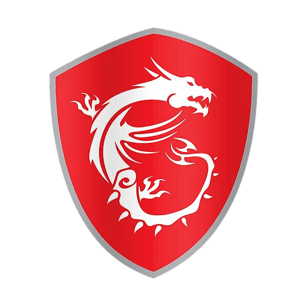

Titulo de la Revista
Subtitulo
La Princesa Sally Acorn es una de los principales protagonistas en la serie de cómics de Sonic the Hedgehog y sus spin-offs publicados por Archie Comics. Ella es una ardilla antropomórfica, la hija del King Acorn y la líder de los New Freedom Fighters. Nacida como la heredera del trono de sus padres, fue trasladada, como una niña, al santuario de Knothole Village en la Wood Zone por su Niñera Rosie Woodchuck cuando su padre fue traicionado por su consejero real, el Dr. Eggman y condujo a los Knothole Freedom Fighters en muchas misiones sobre el terreno contra el científico cuando tomó el poder después de desterrar al rey a la Special Zone. Después que el King Acorn fue rescatado y reanudó su papel como rey, Sally siguió al frente de los Knothole Freedom Fighters en la continua batalla contra el Eggman Empire.